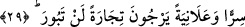

saygı duyar. Bu mânâyı ifâde eden okuyuş, her ne kadar şaz bir okuyuş ise de çok
mânidar ve anlamlıdır. Abdullah b. Ömer burada haşyeti “ihtiyar ve tercih etmek”
mânâsında değerlendirmiş ve Allah kulları arasından ancak âlimleri tercih eder ve
seçer demiştir.
“Şüphesiz Allah, dâimâ üstündür,” yâni kendisinin azâbından, cezâlandırmasından
korkmayan kimseden intikam almaya kâdirdir ve haşyet sahibi kulları “çok
bağışlayandır.”
Bu ifâde azgınlıkta ısrarcı olanı cezâlandırma isyan ve günahtan tövbe edeni de
bağışlama mânâsına delâlet ettiği için haşyet, korku ve saygının da gerekçesi
durumundadır. Böyle sıfat ve niteliklere sâhip olana saygı duyulmalı ve ondan
korkulmalıdır.
Denilir ki “haşyet”, hoş olmayan bir şeyin ileride başa geleceği endişesiyle kalbin
ıstırab duymasıdır. Bu bazen kulun suç ve günahlarının çokluğu sebebiyle, bazen de
Allah Teâlâ’nın heybet ve celâlini mârifetle (bilmekle) olur. Peygamberlerin haşyeti bu
kabildendir. Mümin, insanların Allah’tan en çok korkanı ve Allah’a en saygılı olanı
olmak için Allah’ı bilme, yâni mârifetullah’ı elde etme konusunda çok gayretli
olmalıdır. Korku ve saygı mertebeleri ilim mertebelerine göredir.
Ebü’l-Leys tefsirinde der ki: Rivayete göre Peygamberimiz (s.a.)’e: “Ey Allah’ın
Rasûlü! Bizden hangimiz Allah’ı en iyi bilendir?” diye sordular. Peygamberimiz (s.a.):
“Allah’tan en çok korkan ve Allah’a en saygılı olanınızdır. Zira Allah Teâlâ “Kulları
içinden ancak âlimler, Allah’tan (gereğince) korkar.” buyurmaktadır. Bu sefer, “Ey
Allah’ın Rasûlü! Arkadaşların en üstün olanı hangisidir?” diye soruldu. Peygamberimiz
(s.a.): “Allah’ı zikrettiğinde sana yardım eden; unuttuğunda ise Allah’ı sana
hatırlatandır” buyurdu. Yine arkadaşların en kötüsü hangisidir?” diye sordular.
Peygamberimiz (s.a.) “Allah’ı zikrettiğinde sana yardım etmeyen; unuttuğunda ise
sana hatırlatmayandır.” buyurdular. Sonra “İnsanların kötüsü hangisidir?” diye
soruldu. Peygamberimiz (s.a.) “Allahım! Âlimleri bağışla, zira âlim bozulursa
insanlar da bozulur” buyurdular.[78]
Ne kadar ilim sahibi olursan ol!
Sende amel olmadıkça câhilsin.
Allah Teâlâ’dan bizleri âlim ve muhakkık yapmasını, havf ve haşyette, korku ve
saygıda sâdık ve gerçekçi kılmasını diliyoruz.